統計モデリング入門 2026 岩手連大
- 導入、直線回帰
- 確率分布、擬似乱数生成
- 尤度、最尤推定
- 一般化線形モデル(GLM)
- 個体差、一般化線形混合モデル(GLMM)
- ベイズの定理、事後分布、MCMC
- StanでGLM
- 階層ベイズモデル(HBM)
https://heavywatal.github.io/slides/iwate2026stats/
何でもかんでも直線あてはめではよろしくない
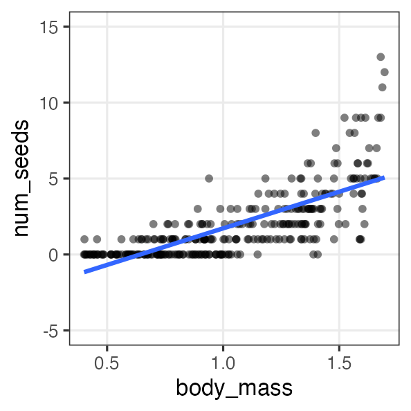
- 観察データは常に正の値なのに予測が負に突入してない？
- 縦軸は整数。しかものばらつきが横軸に応じて変化？
何でもかんでも直線あてはめではよろしくない
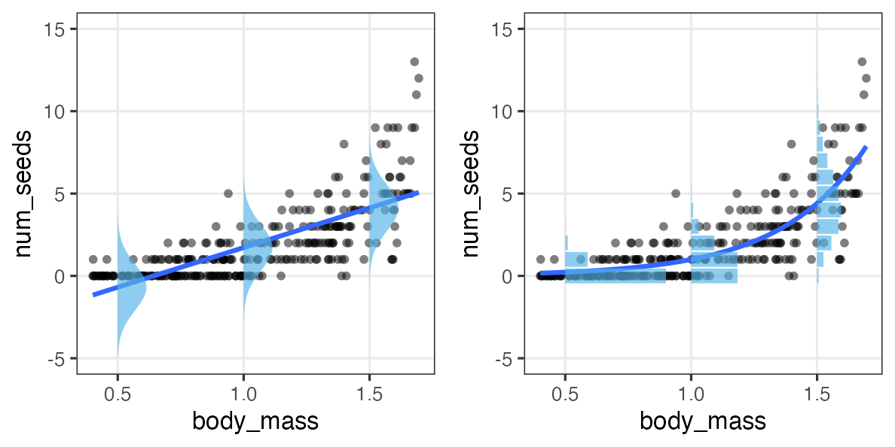
- 観察データは常に正の値なのに予測が負に突入してない？
- 縦軸は整数。しかものばらつきが横軸に応じて変化？
- データに合わせた統計モデルを使うとマシ
よりよい回帰をめざして
久保先生の緑本に沿ってちょっとずつ線形モデルを発展させていく。

線形モデル LM (単純な直線あてはめ)
↓ いろんな確率分布を扱いたい
一般化線形モデル GLM
↓ 個体差などの変量効果を扱いたい
一般化線形混合モデル GLMM
↓ もっと自由なモデリングを！
階層ベイズモデル HBM
最小二乗法
最尤推定法
MCMC
確率分布
発生する事象(値)と頻度の関係。
手元のデータを数えて作るのが経験分布
e.g., サイコロを12回投げた結果、学生1000人の身長
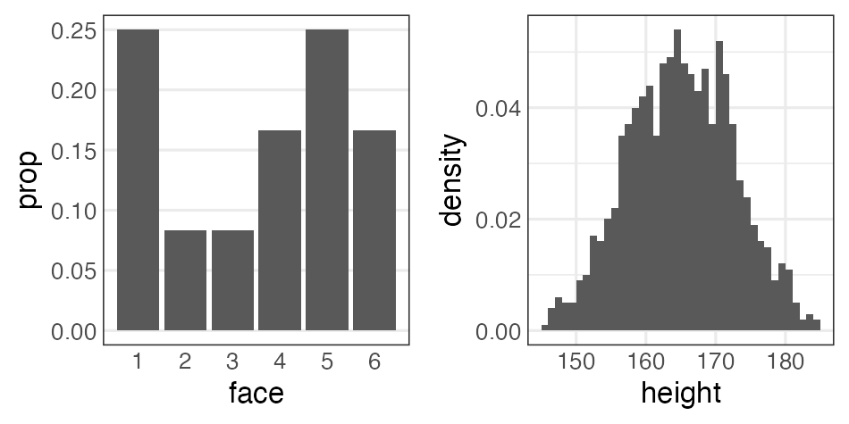
一方、少数のパラメータと数式で作るのが理論分布。
(こちらを単に「確率分布」と呼ぶことが多い印象）
分布を特徴づける代表値 central tendency
- 平均値 mean
- 和を観察数で割る
- 中央値 median
- 順に並べて真ん中
- 最頻値 mode
- 最も頻度が高い値
- 外れ値に対する応答
- もし総資産額20兆円の大富豪が鳥取県に引っ越してきたら
→ 県民の平均資産は4000万円上昇。中央値・最頻値はほぼそのまま。
目的や状況に応じて使い分けよう。
ばらつきを捉える記述統計量
- 分散 variance
- 平均値からの差の自乗の平均。 $\frac 1 n \sum _i ^n (X_i - \bar X)^2$
- これの平方根が標準偏差 (standard deviation)。
- Percentile, Quantile (四分位)
- 小さい順にならべて上位何%にあるか。
- 中央値 = 50th percentile = 第二四分位(Q2)
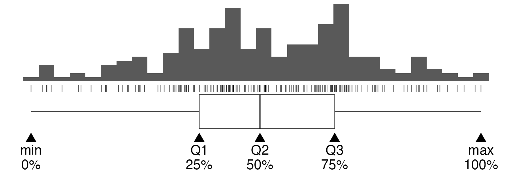
記述統計量に頼りすぎず分布を可視化する
同じデータでも見せ方で印象・情報量が変わる。
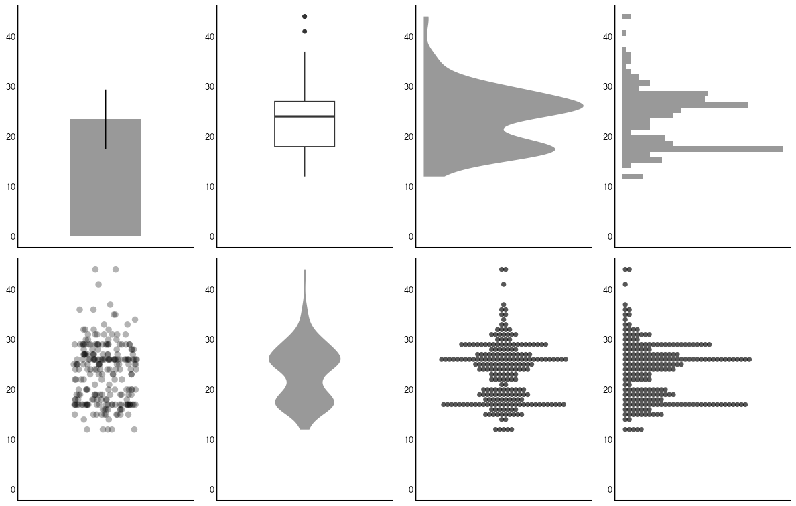
ばらつきの様子は大小の判断にも重要
たまたまかも。
群間の差は微妙か。
群間には差がありそう。
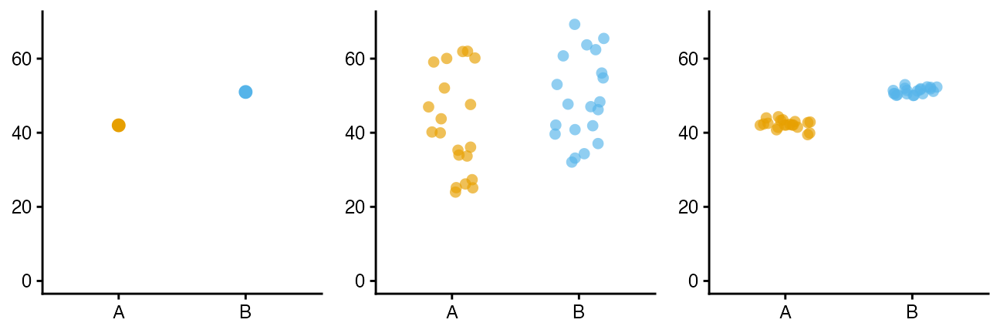
「こんなことがたまたま起こる確率はすごく低いです！」
をちゃんと示す手続きが統計的仮説検定。
でも要約統計量とか検定結果だけを見て判断するのは危険…
確率変数$X$はパラメータ$\theta$の確率分布$f$に従う…?
$X \sim f(\theta)$
e.g.,
コインを3枚投げたうち表の出る枚数 $X$ は二項分布に従う。
$X \sim \text{Binomial}(n = 3, p = 0.5)$
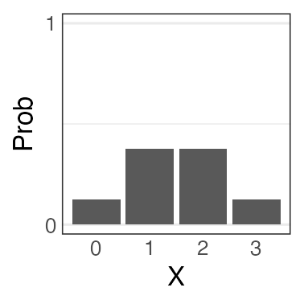
一緒に実験してみよう。（日本の硬貨は年号ありが裏）
試行を繰り返して記録してみる
コインを3枚投げたうち表の出た枚数 $X$
試行1: 表 裏 表 → $X = 2$
試行2: 裏 裏 裏 → $X = 0$
試行3: 表 裏 裏 → $X = 1$ 続けて $2, 1, 3, 0, 2, \ldots$
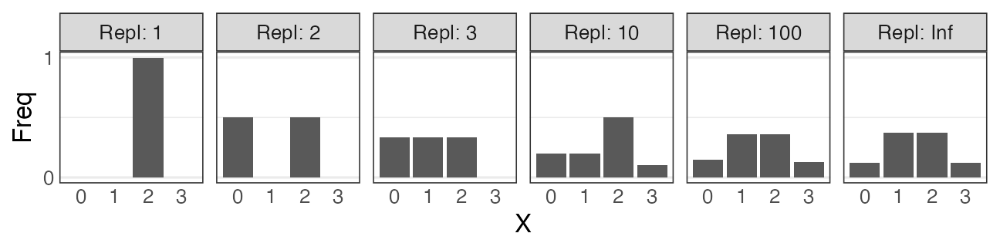
0と3はレア。1と2が3倍ほど出やすいらしい。
コイントスしなくても $X$ らしきものを生成できる
- コインを3枚投げたうち表の出る枚数 $X$
- $n = 3, p = 0.5$ の二項分布からサンプルする乱数 $X$
↓ サンプル
{2, 0, 1, 2, 1, 3, 0, 2, …}
これらはとてもよく似ているので
「コインをn枚投げたうち表の出る枚数は二項分布に従う」
みたいな言い方をする。逆に言うと
「二項分布とはn回試行のうちの成功回数を確率変数とする分布」
のように理解できる。
統計モデリングの一環とも捉えられる
コイン3枚投げを繰り返して得たデータ {2, 0, 1, 2, 1, 3, 0, 2, …}
↓ たった2つのパラメータで記述。情報を圧縮。
$n = 3, p = 0.5$ の二項分布で説明・再現できるぞ

こういうふうに現象と対応した確率分布、ほかにもある？
有名な確率分布、それに「従う」もの
- 離散一様分布
- コインの表裏、サイコロの出目1–6
- 負の二項分布 (幾何分布 if n = 1)
- 成功率pの試行がn回成功するまでの失敗回数
- 二項分布
- 成功率p、試行回数nのうちの成功回数
- ポアソン分布
- 単位時間あたり平均$\lambda$回起こる事象の発生回数
- ガンマ分布 (指数分布 if k = 1)
- ポアソン過程でk回起こるまでの待ち時間
- 正規分布
- 確率変数の和、平均値など。
離散一様分布
同じ確率で起こるn通りの事象のうちXが起こる確率
e.g., コインの表裏、サイコロの出目1–6
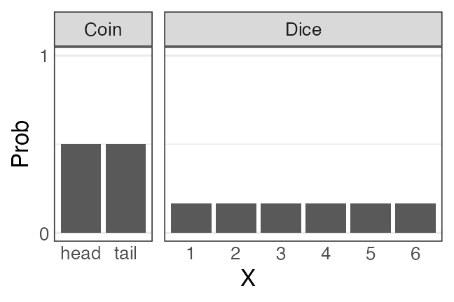
🔰 一様分布になりそうな例を考えてみよう
幾何分布 $~\text{Geom}(p)$
成功率pの試行が初めて成功するまでの失敗回数
e.g., コイントスで表が出るまでに何回裏が出るか
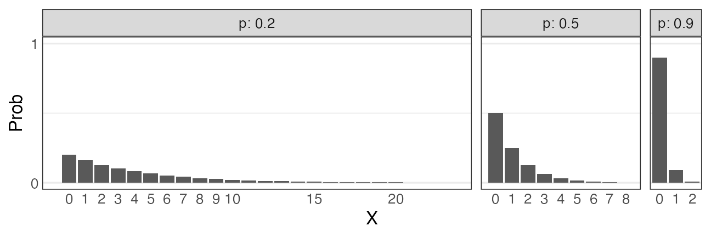
\[ \Pr(X = k \mid p) = p (1 - p)^k \]
「初めて成功するまでの試行回数」とする定義もある。
🔰 幾何分布になりそうな例を考えてみよう
負の二項分布 $~\text{NB}(n, p)$
成功率pの試行がn回成功するまでの失敗回数X。 n = 1 のとき幾何分布と一致。
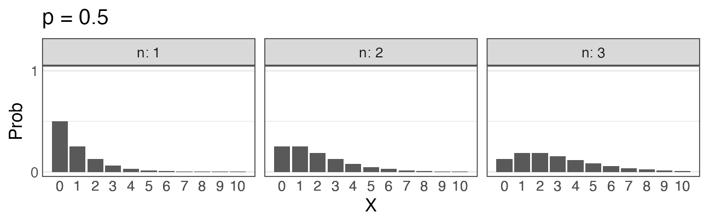
\[ \Pr(X = k \mid n,~p) = \binom {n + k - 1} k p^n (1 - p)^k \]
失敗回数ではなく試行回数を変数とする定義もある。連続である必要はない。
🔰 負の二項分布になりそうな例を考えてみよう
二項分布 $~\text{Binomial}(n,~p)$
確率$p$で当たるクジを$n$回引いてX回当たる確率。平均は$np$。
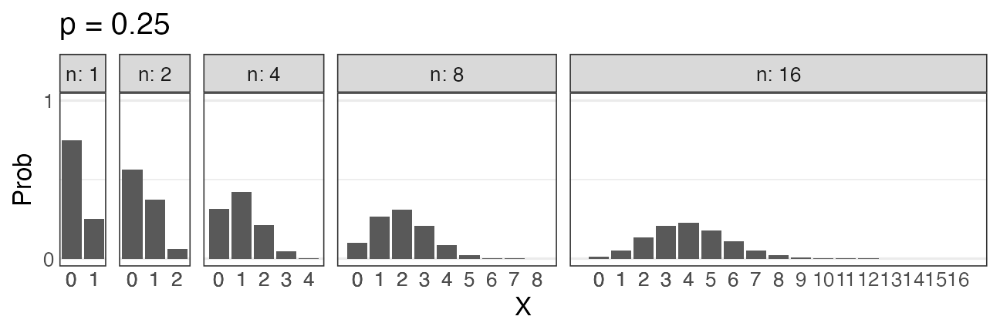
\[ \Pr(X = k \mid n,~p) = \binom n k p^k (1 - p)^{n - k} \]
🔰 二項分布になりそうな例を考えてみよう
ポアソン分布 $~\text{Poisson}(\lambda)$
平均$\lambda$で単位時間(空間)あたりに発生する事象の回数。
e.g., 1時間あたりのメッセージ受信件数、メッシュ区画内の生物個体数
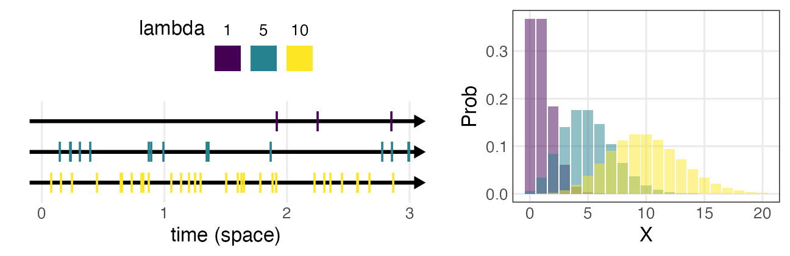
\[ \Pr(X = k \mid \lambda) = \frac {\lambda^k e^{-\lambda}} {k!} \]
二項分布の極限 $(\lambda = np;~n \to \infty;~p \to 0)$。
めったに起きないことを何回も試行するような感じ。
指数分布 $~\text{Exp}(\lambda)$
ポアソン過程の事象の発生間隔。平均は $1 / \lambda$ 。
e.g., メッセージの受信間隔、道路沿いに落ちてる手袋の間隔
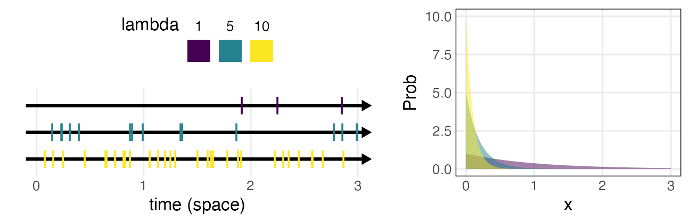
\[ \Pr(x \mid \lambda) = \lambda e^{-\lambda x} \]
幾何分布の連続値版。
🔰 ポアソン分布・指数分布になりそうな例を考えてみよう
ガンマ分布 $~\text{Gamma}(k,~\lambda)$
ポアソン過程の事象k回発生までの待ち時間
e.g., メッセージを2つ受信するまでの待ち時間
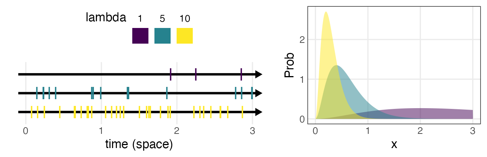
\[ \Pr(x \mid k,~\lambda) = \frac {\lambda^k x^{k - 1} e^{-\lambda x}} {\Gamma(k)} \]
指数分布をkのぶん右に膨らませた感じ。
shapeパラメータ $k = 1$ のとき指数分布と一致。
正規分布 $~\mathcal{N}(\mu,~\sigma)$
平均 $\mu$、標準偏差 $\sigma$ の美しい分布。よく登場する。
e.g., $\mu = 50, ~\sigma = 10$ (濃い灰色にデータの95%, 99%が含まれる):
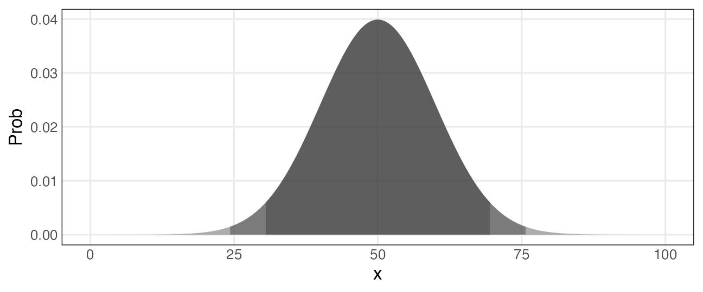
\[ \Pr(x \mid \mu,~\sigma) = \frac 1 {\sqrt{2 \pi \sigma^2}} \exp \left(\frac {-(x - \mu)^2} {2\sigma^2} \right) \]
正規分布に近づくものがいろいろある
標本平均の反復(中心極限定理); e.g., 一様分布 [0, 100) から40サンプル
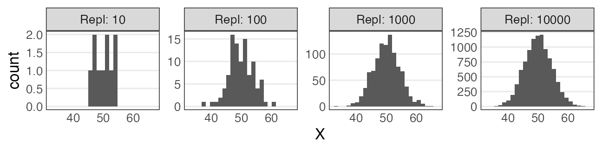
大きい$n$の二項分布
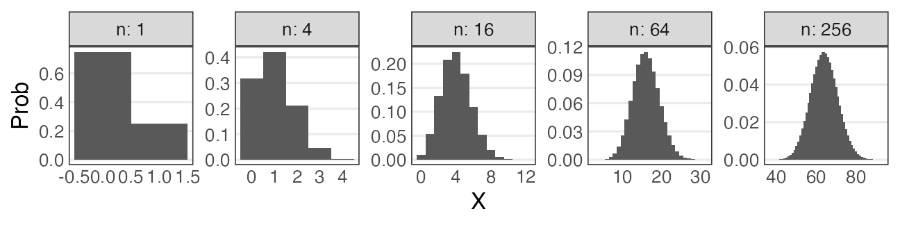
正規分布に近づくものがいろいろある
大きい$\lambda$のポアソン分布
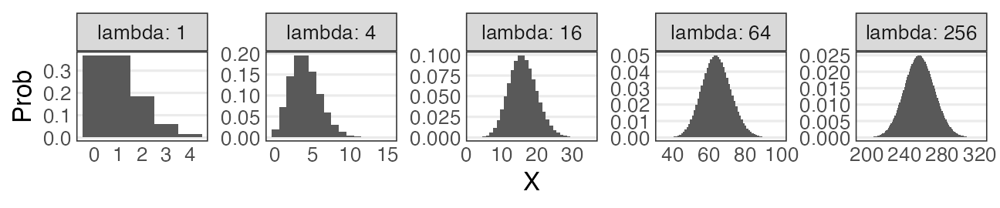
平均値固定なら$k$が大きくなるほど左右対称に尖るガンマ分布
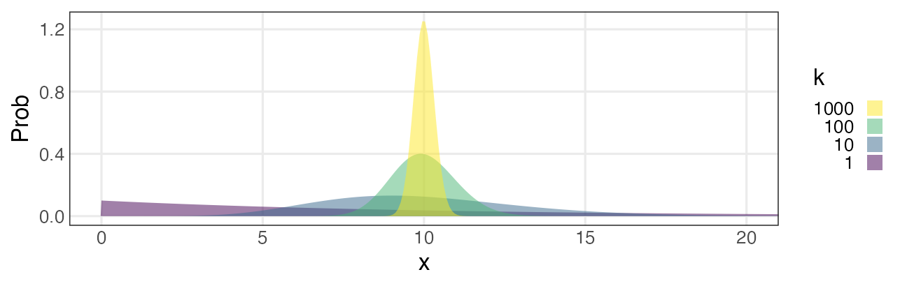
有名な確率分布対応関係ふりかえり
- 離散一様分布
- コインの表裏、サイコロの出目1–6
- 負の二項分布 (幾何分布 if n = 1)
- 成功率pの試行がn回成功するまでの失敗回数
- 二項分布
- 成功率p、試行回数nのうちの成功回数
- ポアソン分布
- 単位時間あたり平均$\lambda$回起こる事象の発生回数
- ガンマ分布 (指数分布 if k = 1)
- ポアソン過程でk回起こるまでの待ち時間
- 正規分布
- 確率変数の和、平均値。使い勝手が良く、よく登場する。
現実には、確率分布に「従わない」ことが多い
植物100個体から8個ずつ種子を取って植えたら全体で半分ちょい発芽。
親1個体あたりの生存数はn=8の二項分布になるはずだけど、
極端な値(全部死亡、全部生存)が多かった。

「それはなぜ？」と考えて要因を探るのも統計モデリングの仕事。
「普通はこれに従うはず」を理解してこそできる思考。
疑似乱数生成器 Pseudo Random Number Generator
コンピューター上でランダムっぽい数値を出力する装置。
実際には決定論的に計算されているので、
シード(出発点)と呼び出し回数が同じなら出る数も同じになる。
set.seed(42)
runif(3L)
# 0.9148060 0.9370754 0.2861395
runif(3L)
# 0.8304476 0.6417455 0.5190959
set.seed(42)
runif(6L)
# 0.9148060 0.9370754 0.2861395 0.8304476 0.6417455 0.5190959
シードに適当な固定値を与えておくことで再現性を保てる。
ただし「このシードじゃないと良い結果が出ない」はダメ。
さまざまな「分布に従う」乱数を生成することもできる。
いろんな乱数を生成・可視化して感覚を掴もう
n = 100
x = sample.int(6, n, replace = TRUE) # 一様分布(整数)
x = runif(n, min = 0, max = 1) # 一様分布
x = rgeom(n, prob = 0.5) # 幾何分布
x = rbinom(n, size = 5, prob = 0.5) # 二項分布
x = rpois(n, lambda = 2.1) # ポアソン分布
x = rnorm(n, mean = 50, sd = 10) # 正規分布
print(x)
p1 = ggplot(data.frame(x)) + aes(x)
p1 + geom_histogram() # for continuous values
p1 + geom_bar() # for discrete values
🔰 正規分布の n, mean, sd を変えて作図し、それぞれの影響を確認しよう。
🔰 ポアソン分布の n, lambda を変えて作図し、それぞれの影響を確認しよう。
🔰 5%の当たりを狙って20連ガチャを回す人が100万人いたら、
全部はずれ、1つ当たり、2つ当たり… の人はどれくらいいるか？
参考文献
- データ解析のための統計モデリング入門 久保拓弥 2012
- StanとRでベイズ統計モデリング 松浦健太郎 2016
- RとStanではじめる ベイズ統計モデリングによるデータ分析入門 馬場真哉 2019
- データ分析のための数理モデル入門 江崎貴裕 2020
- 分析者のためのデータ解釈学入門 江崎貴裕 2020
- 統計学を哲学する 大塚淳 2020
- 「進化学実習2026」 東北大学 理学部生物学科 (2026-04)
- 「Rを用いたデータ解析の基礎と応用」 石川由希 2025 名古屋大学
- 「統計モデリング概論 DSHC 2025」 東京海上 DSHC (2025-08)